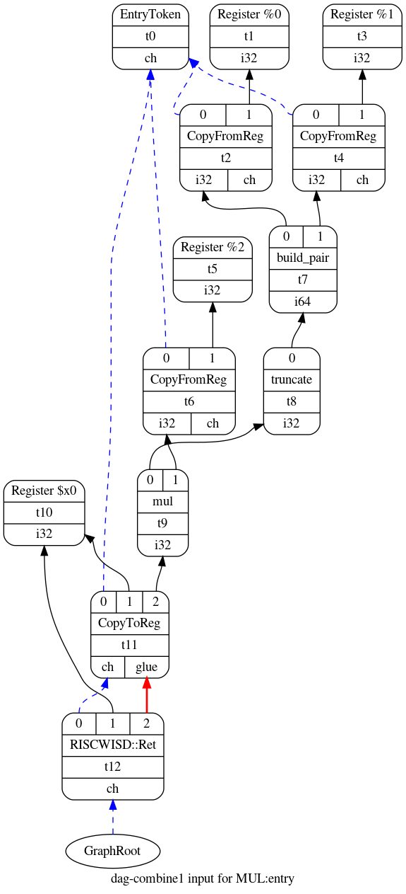
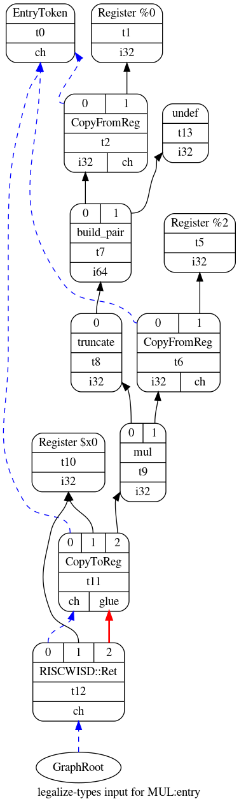
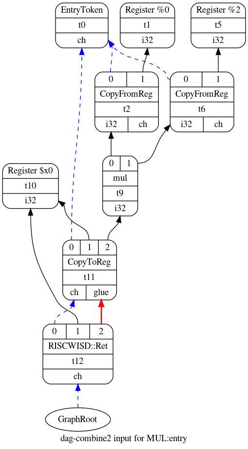
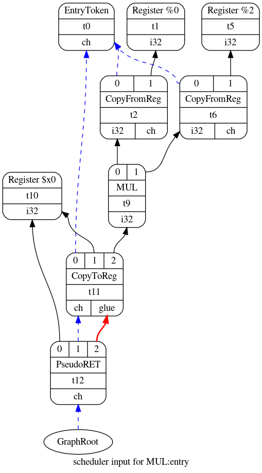

为LLVM添加简易RISCV后端(四)：指令选择
LLVM
为一个新的指令集编写编译器是一件复杂的事情，尽管LLVM的出现使这个过程比之前简单多了！ 一个匪夷所思的困难是缺乏一个简单的、循序渐进的教程12。 因此，本系列博客试图提供一个从头开始编写LLVM后端的简易教程来解决（部分）问题。
指令选择
我们先前简要介绍了LLVM后端的工作过程。 在这篇文章中，我们将更深入地了解这个过程的第一个阶段：指令选择。 我们的目的是在了解RISCW后端的具体实现之前，了解它的工作原理以及如何配置它。
注意：LLVM文档对指令选择的工作原理给出了简短而清晰的描述， 这篇文章通过示例来重新说明这一点。
注意：本文中显示的示例是使用我们的RISCW后端框架构建的。可以在这里找到它的来源。
指令选择过程将LLVM IR转化为指令序列，该指令序列使用了无穷数量的寄存器。 该过程分为以下几个阶段： 1. 构建初始DAG 2. 优化 3. 类型合法化 4. 优化 5. 操作合法化 6. 优化 7. 目标指令选择 8. 调度和形成
我觉得通过例子来了解发生的事情会比较容易，我们将考虑指令选择如何转换下面的C程序。 该代码包含一个MUL函数，该函数接受64位参数x和32位参数y。 参数相乘，并返回32位整数结果。
unsigned int MUL(unsigned long long int x, unsigned int y)
{
return x * y;
}构建DAG
这是指令选择的第一阶段。 它接受LLVM IR作为输入， 并产生Selection DAG(有向无环图)作为输出。 指令选择过程中的每个其他阶段都在DAG上执行，直到产生输出指令序列。 正如前面几篇文章所讨论的，LLVM IR是前端工具(如Clang)根据C代码生成，随后由LLVM优化器进行优化。 下面是C程序的LLVM IR:
define dso_local i32 @MUL(i64 %x, i32 %y) local_unnamed_addr #0 {
entry:
%0 = trunc i64 %x to i32
%conv1 = mul i32 %0, %y
ret i32 %conv1
}Selection DAG实际上是一种精巧的树型数据结构，它表示LLVM IR中的基本块。 基本块是不包含分支目的地（入口除外）和分支指令（出口除外）的指令序列。 示例MUL函数非常简单，它只有一个称为入口的基本块，其他函数通常具有多个基本块。 例如，下面的hello函数具有四个基本块：entry，if.then，if.else和return。 每个基本块都将被转换为单独的DAG。
define dso_local i32 @hello(i32 %x) local_unnamed_addr #0 {
entry:
%cmp = icmp eq i32 %x, 100
br i1 %cmp, label %if.then, label %if.else
if.then: ; preds = %entry
%call = tail call i32 bitcast (i32 (...)* @hello100 to i32 (i32)*)(i32 100) #2
br label %return
if.else: ; preds = %entry
%call1 = tail call i32 bitcast (i32 (...)* @helloOther to i32 (i32)*)(i32 %x) #2
br label %return
return: ; preds = %if.else, %if.then
%retval.0 = phi i32 [ %call, %if.then ], [ %call1, %if.else ]
ret i32 %retval.0
}Selection DAG具有以下属性： + 每个节点都是SDNode类的实例，代表一个操作，如加、减、乘等。 操作类型都定义在文件include/llvm/CodeGen/ISDOpcodes.h中。 + 每个节点都有0个或多个操作数，操作数由其他节点定义，用指向该节点的边表示，边是SDValue类的实例。 + 操作产生的值的类型为MTV（Machine Value Type），比如i1和i8，它们分别表示1位和8位整数。 + 具有副作用的节点会强制对操作进行排序，例如return和loads语句，它们具有类型为MVT::Other的特殊chain值， 既作为输入操作数又作为输出操作数。 + ISD::EntryToken类型的叶节点是代码的入口。 + DAG的根节点是带有链操作数的最终副作用节点。这是的代码块的最后一个操作，例如函数结尾处的返回。
警告！LLVM后端的类型系统非常有限。 当输入的LLVM IR被转换为DAG时，许多有用的类型信息被丢弃。 最值得注意的丢弃是指针类型，MVT类的类型列表完全没有包含指针类型。 因此，指针在DAG中使用整数类型表示，所以很难判断一个节点(如add)的操作数是指针还是整数。
这是我从MUL函数获得的初始Selection DAG。

入口节点位于图的顶部，而根节点位于底部。 还有一个由蓝色边连接的节点链，从根节点开始，到入口节点结束。 这些蓝边就是前面讨论过的链操作数。 黑色边显示的是值的流动，如整数和浮点数。 此Selection DAG的等效文本表示如下所示：
t0: ch = EntryToken
t2: i32,ch = CopyFromReg t0, Register:i32 %0
t4: i32,ch = CopyFromReg t0, Register:i32 %1
t7: i64 = build_pair t2, t4
t8: i32 = truncate t7
t6: i32,ch = CopyFromReg t0, Register:i32 %2
t9: i32 = mul t8, t6
t11: ch,glue = CopyToReg t0, Register:i32 $x0, t9
t12: ch = RISCWISD::Ret t11, Register:i32 $x0, t11:1注意：Selection DAG可以同时包含目标独立和目标相关的节点。 目标独立的操作定义在文件ISDOpcodes.h中。 目标相关的操作由每个后端定义，通常定义在声明TargetLowering子类的同一文件中。 您可以在llvm/lib/Target/RISCW/RISCWISelLowering.h中找到目标相关节点的定义。 上面显示的用于MUL的Selection DAG具有节点t12，该节点代表目标相关操作RISCWISD::Ret，该函数表示从函数返回。
注意：在指令选择过程的各个阶段，您可以通过向llc命令传递-view-dag-combine1-dags，-view-legalize-dags，-view-dag-combine2-dags参数告诉LLVM生成Selection DAG的可视化表示，还可以通过向llc命令传递-debug参数告诉LLVM生成Selection DAG的文本表示。
优化
指令选择阶段会有三次DAG优化过程，第一次优化发生在LLVM IR构建Selection DAG之后。 其余两次将在合法化阶段后执行。 根据LLVM文档，这些优化旨在简化可能由其他阶段(如合法化)生成的不必要的复杂Selection DAGs。
就我所知，LLVM的优化过程就是通过运行一个编译pass将一组节点组合成更简洁的节点。 为了实现这一点，LLVM用这个巨大的C++文件(>20,000行)遍历DAG，并通过模式匹配来寻找优化机会。 例如，合并器可以将Selection DAG的(add (add x, y) z)节点，转换为(add x，y + z)节点，从而消除了add节点。
下图显示了MUL示例函数第一遍优化后的Selection DAG。 与上一节中的Selection DAG相比，优化的DAG用节点t13代替了节点t3和t4。 该优化将丢弃64位整数x的高32位，因为函数MUL的返回值仅依赖x的低32位， 因此，可以通过消除t3和t4简化DAG。

LLVM的DAG合成器只优化目标独立的操作，即ISDOpcodes.h中定义的add、sub、load、store等。 通过覆盖targetlower子类中的PerformDAGCombine函数， 后端可以为合成器提供额外的优化功能，这些功能可以是目标独立的也可以是目标依赖的。 此外，后端必须通知优化器受支持的目标独立的节点， 这通过在targetlower类的子类的构造函数中调用setTargetDAGCombine函数完成。
注意：令人困惑的是，LLVM后端的TargetLowering子类通常在<TARGET_NAME>ISelLowering.cpp文件中实现。 您可以在llvm/lib/Target/RISCW/RISCWISelLowering.cpp中找到RISCW的实现。
注意：XCore后端有一个很好的PerformDAGCombine和setTargetDAGCombine例子（参见这里和这里） ——我的意思是很容易阅读。 另外，看看这个后端是如何将add(add(mul(x，y)，a)，b)节点组合到更简单的目标依赖的lmul(x，y，a，b)节点， 因为XCore架构有一个乘法累加指令3。
类型和操作合法化
上面显示的优化的DAG包含一个节点t7， 它会产生一个i64类型的值， 但是RISCW机器只支持32位。 合法化阶段会解决这些问题。
首先执行的是类型合法化， 它将DAG转换为仅使用本地计算机原生支持的数据类型。 为了实现这一点，它将小类型转换或提升为较大的类型； 例如，i1类型的1位整数转换为i32类型的32位整数。 此外，编译器将大整数分解或展开为较小的整数，例如在32位计算机中，i64类型的64位整数被转换为i32类型的32位整数。 下面的DAG是前面展示的DAG的合法化版本。 在本例中，编译器消除了t3和t7节点，以确保新的DAG只使用i32整数。

操作合法化在第二个优化阶段之后执行。 它将DAG转换为仅使用本地计算机原生支持的操作。 例如，DAG可能包含bit-rotate left（rotl）节点，但目标指令集可能不支持该指令， 因此，操作合法化把该操作转化为移位和或运算的联合操作。
有三种使操作合法化的策略。 首先，将不受支持的操作扩展为一组受支持的操作来模拟原不受支持的操作。 其次，把类型提升为更大的类型，以支持缺失的操作。 第三，使用TargetLowering类的子类中的钩子在C++中实现自定义的合法化。
注意：在以后的文章中，我将解释后端如何配置合法化阶段。 这可以在TargetLowering类的子类的构造函数中完成。
指令选择
此时，DAG包含大部分目标独立（如加和减）节点，以及一小部分目标依赖节点（如RISCWISD::Ret）。 下一步，需要将这些抽象操作映射到目标架构的具体机器指令， LLVM在指令选择阶段会对此进行处理。 处理方法很简单：编译器通过模式匹配将DAG中的节点映射成机器指令。 指令的模式和描述由编译器后端的开发人员通过TableGen代码提供。 另外，可以使用C++直接编写难以使用TableGen描述的复杂模式。
我们将在以后的文章中更仔细地研究TableGen。 现在，让我们考虑一下LLVM如何将合法且优化的DAG映射成下面显示的新DAG。 在这种情况下，只有两个节点需要更改。 t9用指令MUL替换了mul操作，而t12用指令PseudoRet替换了RISCWISD::Ret。

调度和形成
谢天谢地，这里没什么好说的，因为帖子已经很长了！ 此阶段根据某些约束将DAG转换为指令列表。 例如，后端可以通过TargetLowering子类的构造函数调用setSchedulingPreference来指定调度选项。
警告！ 一定要尝试不同的调度首选项！ 如果调度策略与体系结构和处理器的特性不匹配，那么调度策略会显著降低所发出的代码的质量。 这里列出了各种调度选项。
下面是我们MUL函数的指令清单。 有几个重要的事情要注意。 首先，与实际机器的寄存器相反，生成的代码仍然使用一组无限多的虚拟寄存器； 编译器稍后会通过寄存器分配器来处理这个问题。 第二，已经存在一些对寄存器分配过程有用的生命周期信息；例如，有两个寄存器，即x0和x2， 它们在基本块的开始处就处于活动状态。
bb.0.entry:
liveins: $x0, $x2
%2:gpr = COPY $x2
%0:gpr = COPY $x0
%3:gpr = MUL %0:gpr, %2:gpr
$x0 = COPY %3:gpr
PseudoRET implicit $x0